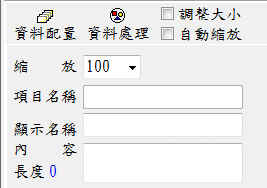

套印內容設定
前言：
本軟體與其他套印軟體最大的不同，在於本軟體可以由使用者自行設計套印內容，要達到這樣的目的，套印內容及資料處理方式都可由使用者自由搭配使用，並可由以視覺化的方式設計套印項目。套印項目預訂位置，可以用直接滑鼠托曳。
- 公用區：
- 此區域的設定會影響到本視窗的其他設定，例如將調整大小打勾時，字串、圖檔都可以用滑鼠調整大小。
- 於設定支票類型表格時，如果將「平行線」的顯示名稱設定為「CrossedCheck」，或將「禁止背書轉讓」顯示名稱設定為「Nonnegotiable」，於進行表格套印時，系統就能提供是否套印「平行線」及「禁止背書轉讓」的功能選項，讓使用者不需改變套印內容設定，即能決定是否套印「平行線」及「禁止背書轉讓」。
- 套印項目管理：主要的功能在於加入套印項 。
- 字串設定：除了圖檔之外的套印內容，全部歸類為字串，因此字串包含了文字、數字類型的套印資料。
- 圖檔設定：可以列印任意圖檔。
- 內容設計：設套印項目字體大小、顏色...等功能。
- 資料配置：設定
(資料字串)類型套印項目，於取得套印資料時(輸入或檔案匯入)後，如何將資料配置給套印項目，資料的配置方式可分為直接取得、共享資料或引用資料。
- 資料處理：設定
(資料字串)類型套印項目資料處理方式，該套印項目必需先於「資料配置設定」視窗，被置於「取得資料項目」或「共享資料項目」區域，才能顯示在此視窗內進行資料處理設定。
套印內容設定視窗
公用區：
此區的設定會影響到本視窗的其他設定，例如「用滑鼠調整大小」打勾時，字串、圖檔都可以用
- 縮位：如果覺的表格電子檔太小不方便設定套印項目時，可由此調整表格圖檔大。
- 調整大小：
- 以用滑鼠調整字串、圖檔大小。
- 內容設計」工作頁的自動縮放，需要取消才能順利調整套印項目的大小。
- 項目名稱：系統自動賦予套印項目的名稱，此名稱無法修改。
- 顯示名稱：由使用候依表格上面的名稱進行輸入，這個名稱會用於許地方(如資料排序、資料處理輸入設定、資料甲用、存檔設定等地方。
- 內容：方便使用者設定套印內容。
- 長度 0：自動計算內容長度，便利在「資料處理」。

公用區工作頁
套印項目管理工作頁
可由這裏增減套印項目，套印項目泛指要印於表格上面的字串或圖檔。套印項目可分為可改變內容及不可改變內容等2種類型。
 套印項目管理工作頁
套印項目管理操作說明
套印項目管理工作頁
套印項目管理操作說明
- 要加套印項目時，請先依需要點右列

 其中一項類型後，再於用滑鼠於表格圖檔上面適當位置用滑鼠點擊即可加入套印項目。
其中一項類型後，再於用滑鼠於表格圖檔上面適當位置用滑鼠點擊即可加入套印項目。
- 連續加入：打勾後，再選擇套印類型，就能在表格底圖上面，無限制的加入套印項目，但 這種方式加入的套印項目互為獨立沒有群組關係。
- 數量：一次加入多個同類型的套印項目，這些項目也會自動成群組關係;例如銀行帳號有14 碼，您就可以一次加入14個字串以供套印帳號使用。
- 間距：
- 與「數量」配合使用，若數值太小，所有套印項目可能會重疊在一起。
- 單位是mm，1公分等於10 mm。
- 刪除：先點選某個套印項目，再按下刪除，即可以刪除該套印項目。
- 清空：清空所有的套印項目。
- 套印類型
-
資料型字串：可以動態改變其內容，例如支票收票人名稱，此類型的字串通常會於 套印後進行存檔備查。項目名稱以「QRDBTEXT」進行編碼。
-
一般字串：用於固定不變的字串，例如「禁止背書轉讓」。項目名稱以「QRLABEL」 進行編碼。
-
資料圖檔：可以動態改變其內容，例如列印員工識別證時，每個人的相片圴不相同。 項目名稱以「QRDBImage」進行編碼。
-
一般圖檔：用於固定不變的圖檔內容，例如「平行線」、商標。項目名稱以 「QRImage」為碼。
- 位置：可以用輸入數值的方式調整套印項目的位置，例如上面、左邊，如果要用滑鼠托曳 位置，「用滑鼠調整大小」必需打勾。
- 大小：可以用輸入數值的方式調整套印項目的大小(如寬度、高度)或尺寸(如寬度或高度。
- 印表機：
- 一般表格套印時，只會用1台印表機，此時只要使用第一台(預設值)即可。
- 為了節省成本或是特殊套印，您可使用2台印表機執行套印工作，例如一台套印MICR 字串，一台套印彩色圖案。
內容設計工作頁
套印項目有字串及圖檔2種類型，因此內容設定會依不同的類型提供不同的設定功能。
內容設計工作頁–字串類型
一、字串類型：
- 自動縮放：未勾選時可以配合「調整大小」來調型套印項目的外觀大小。
- 字串設定：與Word使用的方式相同，可調整顏色、大小、框線之類的功能。
- 內容引用：依指定的套印項目，其大小、顏色..等及內容引用輸入框，來改變群組或全部 套印的設定值。
- 輸入框：如有輸入資料後可用於修改群組或全部套印項目的
顯示名稱，若為空白 (預設值)則不影響其他項目
顯示名稱. 稱。本功能主要便利調整群組外觀，例如帳號， 都只顯示1個字元以利管理設定。
- 群組：可改變群組套印項目。例如全部改為置中對齊。
- 全部：可以改變該表格所有的字串屬性，例如字體全部設為標楷體，大小設為12。
- 群組位置：可將整個群組的套印項目位置作均分、同左、同高處理。
- 自動配置群組套印項目位置：指定群組最左及最右的位置後，將群組成員(套印項目) 依固定距離均分該空間。例如銀行帳號有14碼，本功能於指定第1碼及第最後一碼的 位置後，受執行均分，此時所有帳號即會以適當的距離分享該寬度。
- 設定第1碼：先點選群組中最左邊的項目後再按下
(左)。
- 設定最後1碼：先點選群組最右邊的項目後再按下
(右)。
- 均分位置：點選
 (均分)即可將帳號所有成員的位置調整完成。
(均分)即可將帳號所有成員的位置調整完成。
- 同左：點選群組任一成員，按下
 (同左)即可。
(同左)即可。
- 同高：點選群組任一成員，按下
(同高)即可。
二、圖檔類型：套印項目如為圖檔類型，執行圖檔設定可以加入、移除其指定的圖檔。
內容設計工作頁–圖檔類型
表格定位工作頁
可提供資料字串類型套印項目進行表格式排列時，快速定位之功能。
表格定位工作頁